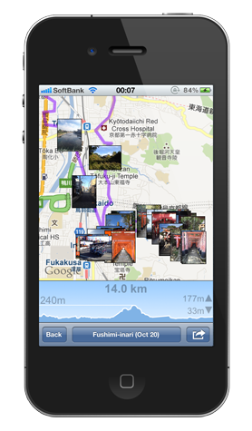

Designed for iOS 5
Sankou
The easy to use GPS recorder
Features:
- Adaptive GPS maximizes battery life
- Fully background-able iOS 5 support
- Automatic, scalable elevation map
- Easy to read Altitude - Current/High/Low/Gain
- On screen compass with bearing readout
- Built in camera with photo viewer
- Automatically imports photos taken in other apps
- Unlimited saved routes
- KMZ / KML export via Email or Dropbox
- Simple to use interface, even one-handed
- English / Japanese language